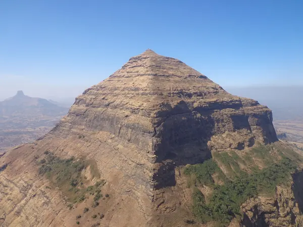
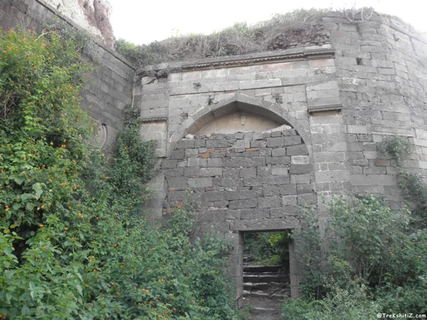
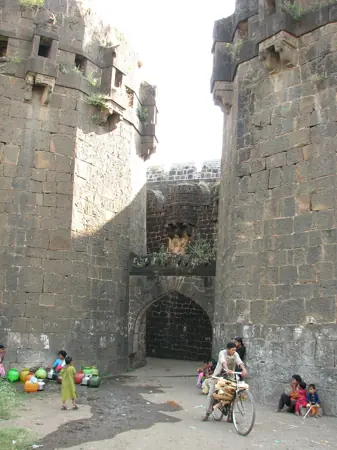
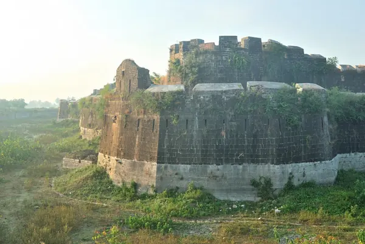
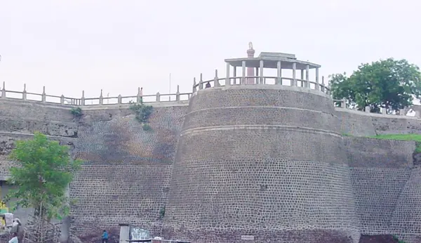
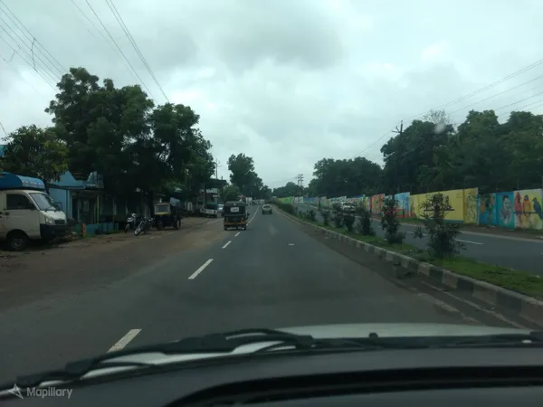

Dhule
Laling fort, Songir, Thalner, Raikot
A DIFFERENT STORY IN EVERY DIRECTION
27 districts represented in this catalogue.
Khandesh & North Maharashtra
Laling fort, Songir, Thalner, Raikot

Parola Fort, Amalner, Bahadarpur Fort, Pal Fort

Alang Fort, Ankai Fort, Avandha Fort, Bhaskargad, Bitangad, Chandwad fort, Chauler Fort, Dermal Fort, Dhodap,
Konkan

Fort George, Mahim Fort, Riwa Fort, Sewri Fort, Sion Hillock Fort, Worli Fort

Bandra Fort

Arnala fort, Asheri Fort, Bhupatgad Fort, Gambhirgad, Kaldurg Fort, Kamandurg Fort, Kelve Fort, Kohoj, Shirgao

Avchitgad, Birwadi fort, Chandragad Fort, Dronagiri Fort, Ghosalegad Fort, Irshalgad, Karnala Fort, Khanderi,

Bankot fort, Fattegad, Gopalgad (Anjanvel), Gowalkot, Jaigad Fort, Mahipatgad, Mandangad fort, Palgad, Purnaga

Bhagwantgad, Bharatgad, Devgad fort, Nivati fort, Sindhudurg Fort, Vijaydurg Fort

Belapur Fort, Dongri Fort, Durgadi Fort, Ghodbunder Fort, Gorakhgad, Mahuli, Malanggad, Siddhagad
Marathwada

Dharmapuri

Ambagad

Antur Fort, Devagiri (Daulatabad), Bhangsigad(Bhangsi mata gad), Janjala (Vaishagad), Vetalwadi Gad

Naldurg Fort, Paranda Fort

Udgir Fort

Kandhar Fort, Mahur Fort
Vidarbha

Akola Fort, Balapur Fort, Narnala

Gavilgad

Ballarpur Fort

Vairagad Fort

Sitabuldi Fort, Bhivagad, Nagardhan
Western Maharashtra

Ahmednagar Fort, Bahadur Fort, Harishchandragad, Kharda, Kunjargad, Pabargad, Ratangad, Jamgaon Fort, Palashi

Gagangad, Mahipalgad, Panhala Fort, Pargadh, Rangana Fort, Samangad, Shivgad, Vishalgad, Bhudargad, Gandharvga

Bhorgiri fort, Chavand, Ghangad, Hadsar, Indori fort, Jivdhan, Korigad, Lohagad, Malhargad, Mohangad, Narayang

Machindragad, Prachitgad

Ajinkyatara, Bhairavgad, Bhushangad, Chandan Fort, Dategad, Kalyangad (Nandgiri), Kamalgad, Mahimangad, Makran

Akluj Fort